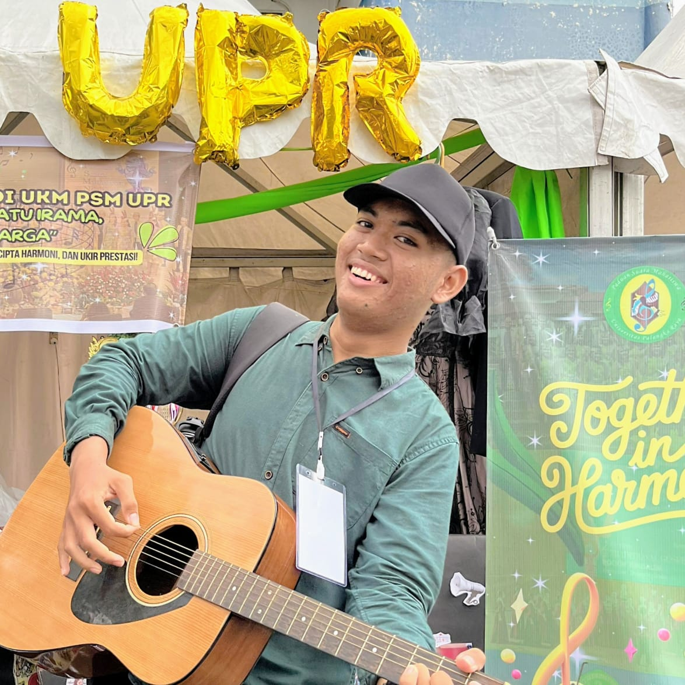

Alfa Rivales Matal
Mahasiswa Teknik Informatika
Universitas Palangkaraya
Minat & Hobi
Web Development
Fotografi
Musik
Desain Grafis
Bermain Game
Membaca
Tentang Saya
Halo! Saya Alfa, seorang mahasiswa Teknik Informatika yang bersemangat dalam dunia pengembangan web dan desain. Saya senang belajar teknologi baru dan membuat solusi kreatif. Selain koding, saya juga tertarik pada desain grafis, fotografi, dan musik. Halaman ini adalah tempat saya berbagi jejak digital dan menghubungkan diri dengan orang-orang yang memiliki minat yang sama.